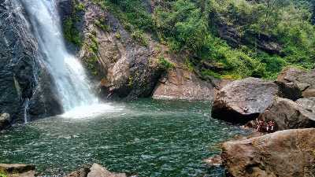
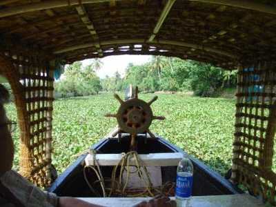

KOTTAYAM
Kottayam is one of fourteen districts in the state of Kerala, India. Kottayam district comprises six municipal towns: Kottayam, Changanassery, Pala, Erattupetta, Ettumanoor, and Vaikom. It is the only district in Kerala that does not border the Arabian Sea or any other states.

Marmala waterfalls

Located at a distance of few kms from Erattupetta in Kottayam inside a private rubber estate, Marmala Waterfalls are popularly known as the ‘enchantress of the jungle’. Plummeting from a height of 200 feet, the unblemished clear waters create and aura of mist around them.
Readmore
Illikal kallu

Located at a height of 6000 ft above the sea level in the Western Ghats of Kottayam, Kerala, Illikkal Kallu is a major tourist attraction and one of the most pristine spots in all of India. Situated in Moonnilavu Village, Meenachil taluk, the nearest city to the summit is Teekoy.
Readmore
kumarakom bird sanctuary

A paradise for bird watchers, Kumarakom Bird Sanctuary or Vembanad Bird Sanctuary is situated on the banks of Lake Vembanad in kavanar River basin. The place is spread across a huge area of 14 acres providing a natural habitat to about 91 species of local birds and 50 species of migratory birds.
Readmore